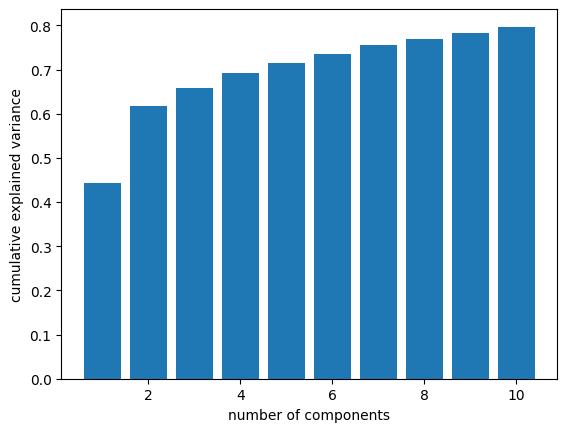
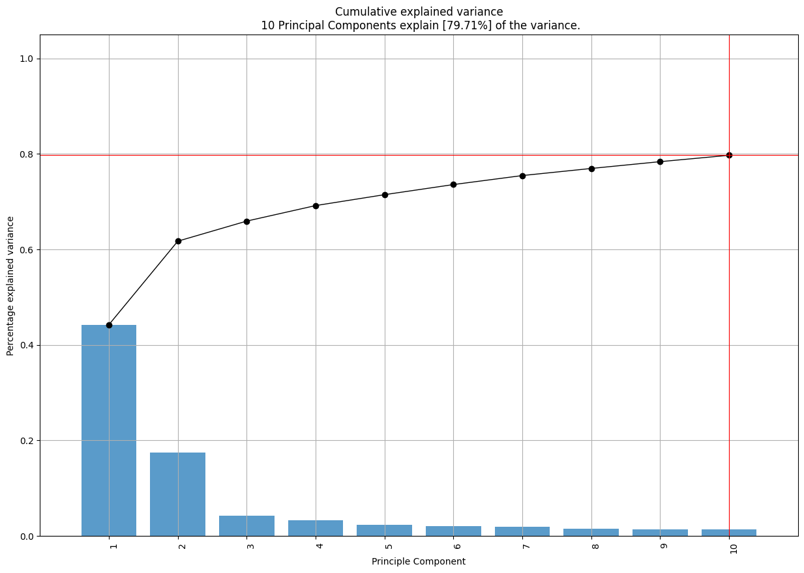
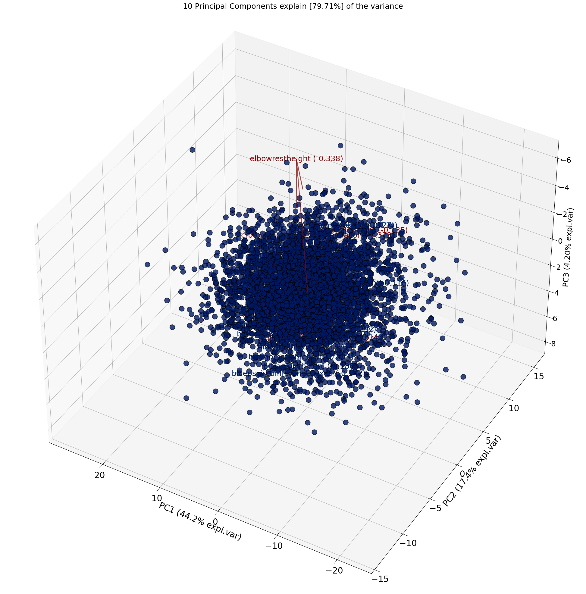

The Principal Components of Anthropometry#
In a previous post I explored the correlations between measurements in the ANSUR-II dataset, which includes 93 measurements from a sample of U.S. military personnel. I found that measurements of the head were weakly correlated with measurements from other parts of the body – and in particular the protrusion of the ears is almost entirely uncorrelated with anything else.
A friend of mine, and co-developer of the Modeling and Simulation class I taught at Olin, asked whether I had tried running principal component analysis (PCA). I had not, but now I have. Let’s look at the results.
Click here to run this notebook on Colab.
The data#
Here’s the ANSUR data, originally downloaded from The OPEN Design Lab.
Since heights are in mm, I converted to cm.
| abdominalextensiondepthsitting | acromialheight | acromionradialelength | anklecircumference | axillaheight | balloffootcircumference | balloffootlength | biacromialbreadth | bicepscircumferenceflexed | bicristalbreadth | ... | verticaltrunkcircumferenceusa | waistbacklength | waistbreadth | waistcircumference | waistdepth | waistfrontlengthsitting | waistheightomphalion | weightkg | wristcircumference | wristheight | |
|---|---|---|---|---|---|---|---|---|---|---|---|---|---|---|---|---|---|---|---|---|---|
| 0 | 266 | 1467 | 337 | 222 | 1347 | 253 | 202 | 401 | 369 | 274 | ... | 1700 | 501 | 329 | 933 | 240 | 440 | 1054 | 815 | 175 | 853 |
| 1 | 233 | 1395 | 326 | 220 | 1293 | 245 | 193 | 394 | 338 | 257 | ... | 1627 | 432 | 316 | 870 | 225 | 371 | 1054 | 726 | 167 | 815 |
| 2 | 287 | 1430 | 341 | 230 | 1327 | 256 | 196 | 427 | 408 | 261 | ... | 1678 | 472 | 329 | 964 | 255 | 411 | 1041 | 929 | 180 | 831 |
| 3 | 234 | 1347 | 310 | 230 | 1239 | 262 | 199 | 401 | 359 | 262 | ... | 1625 | 461 | 315 | 857 | 205 | 399 | 968 | 794 | 176 | 793 |
| 4 | 250 | 1585 | 372 | 247 | 1478 | 267 | 224 | 435 | 356 | 263 | ... | 1679 | 467 | 303 | 868 | 214 | 379 | 1245 | 946 | 188 | 954 |
| ... | ... | ... | ... | ... | ... | ... | ... | ... | ... | ... | ... | ... | ... | ... | ... | ... | ... | ... | ... | ... | ... |
| 4077 | 235 | 1353 | 312 | 216 | 1263 | 228 | 193 | 384 | 318 | 241 | ... | 1557 | 442 | 279 | 816 | 210 | 347 | 1016 | 675 | 163 | 778 |
| 4078 | 247 | 1473 | 336 | 234 | 1346 | 253 | 196 | 428 | 374 | 284 | ... | 1715 | 475 | 351 | 978 | 235 | 385 | 1082 | 896 | 178 | 873 |
| 4079 | 264 | 1394 | 313 | 227 | 1280 | 245 | 193 | 407 | 367 | 271 | ... | 1682 | 483 | 333 | 991 | 258 | 353 | 1011 | 832 | 178 | 822 |
| 4080 | 203 | 1417 | 327 | 223 | 1314 | 250 | 196 | 419 | 365 | 271 | ... | 1589 | 430 | 293 | 783 | 192 | 350 | 1062 | 731 | 172 | 837 |
| 4081 | 327 | 1523 | 358 | 226 | 1408 | 269 | 225 | 442 | 379 | 275 | ... | 1764 | 511 | 354 | 1080 | 294 | 389 | 1119 | 985 | 182 | 894 |
4082 rows × 93 columns
Principle Component Analysis#
As you might guess from the comments below, I used ChatGPT to generate a lot of the code. It took some revision to get it working, but the head start definitely saved me some time.
Here’s a visualization of explained variance versus number of components. I lifted this from The Python Data Science Handbook.

With one component, we can capture 44% of the variation in the measurements. With two components, we’re up to 62%. After that, the gains are smaller (as we expect), but with 10 measurements, we get up to 78%.
Loadings#
Looking at the loadings, we can see which measurements contribute the most to each of the components, so we can get a sense of which characteristics each component captures.
| abdominalextensiondepthsitting | acromialheight | acromionradialelength | anklecircumference | axillaheight | balloffootcircumference | balloffootlength | biacromialbreadth | bicepscircumferenceflexed | bicristalbreadth | ... | verticaltrunkcircumferenceusa | waistbacklength | waistbreadth | waistcircumference | waistdepth | waistfrontlengthsitting | waistheightomphalion | weightkg | wristcircumference | wristheight | |
|---|---|---|---|---|---|---|---|---|---|---|---|---|---|---|---|---|---|---|---|---|---|
| 0 | -0.085451 | -0.134108 | -0.116021 | -0.100365 | -0.127055 | -0.105897 | -0.112045 | -0.108305 | -0.092030 | -0.103360 | ... | -0.124746 | -0.094822 | -0.097267 | -0.095846 | -0.087184 | -0.082944 | -0.114016 | -0.131211 | -0.115607 | -0.120198 |
| 1 | -0.162882 | 0.099494 | 0.106095 | -0.092119 | 0.123047 | -0.037801 | 0.064844 | -0.017398 | -0.141551 | -0.055853 | ... | -0.096331 | -0.038278 | -0.157748 | -0.165992 | -0.161084 | -0.061621 | 0.150431 | -0.126668 | -0.062109 | 0.048192 |
| 2 | -0.014415 | -0.122852 | 0.012455 | 0.022595 | -0.112583 | 0.073198 | 0.118903 | 0.059989 | 0.103379 | -0.135286 | ... | -0.167965 | -0.179761 | -0.081045 | -0.045152 | -0.021020 | -0.228031 | -0.030049 | -0.003644 | 0.042584 | -0.216034 |
| 3 | 0.173835 | 0.015046 | 0.085668 | -0.166709 | 0.009379 | -0.247034 | -0.099303 | -0.044501 | 0.032602 | 0.021611 | ... | -0.000887 | 0.023748 | 0.131975 | 0.161440 | 0.181350 | -0.043284 | 0.010540 | 0.055891 | -0.153328 | -0.019573 |
| 4 | 0.066929 | 0.015922 | -0.052847 | 0.179214 | 0.008862 | 0.148688 | 0.102660 | -0.291544 | 0.025702 | 0.022706 | ... | 0.014710 | 0.006024 | 0.053549 | 0.058204 | 0.067503 | -0.048844 | -0.011521 | 0.043992 | 0.064811 | 0.057644 |
| 5 | 0.068020 | 0.045207 | 0.009170 | -0.079944 | 0.034725 | -0.068642 | -0.007852 | -0.210508 | -0.059574 | 0.028846 | ... | 0.014737 | 0.083359 | 0.029012 | 0.049868 | 0.070885 | 0.007065 | -0.017563 | 0.003736 | -0.105828 | 0.075317 |
| 6 | 0.093649 | 0.012374 | 0.031909 | -0.108847 | -0.004847 | 0.022886 | 0.039429 | -0.041191 | -0.045501 | 0.027304 | ... | 0.018137 | 0.283710 | 0.027891 | 0.070190 | 0.116803 | 0.201994 | -0.123756 | -0.022860 | 0.095987 | 0.009422 |
| 7 | -0.052688 | 0.061738 | -0.115124 | -0.010012 | 0.048177 | -0.005232 | 0.088680 | -0.011161 | 0.095275 | 0.027243 | ... | -0.009393 | 0.042837 | -0.063307 | -0.051032 | -0.029532 | -0.145553 | 0.058143 | 0.006287 | 0.020673 | 0.200656 |
| 8 | -0.002601 | -0.041691 | 0.011918 | 0.128483 | -0.038433 | 0.077109 | 0.143232 | 0.113983 | -0.133804 | 0.253301 | ... | -0.066053 | 0.180681 | 0.109480 | 0.053116 | 0.019980 | -0.059466 | -0.048724 | 0.005821 | -0.105042 | -0.049366 |
| 9 | 0.088042 | -0.015056 | 0.071590 | -0.043072 | -0.004563 | -0.106276 | 0.033972 | 0.002206 | -0.011959 | -0.078814 | ... | 0.053774 | 0.227461 | 0.021029 | 0.072728 | 0.097588 | 0.268130 | -0.129249 | 0.027296 | -0.009578 | -0.088460 |
10 rows × 93 columns
| 0 | 1 | 2 | 3 | 4 | 5 | 6 | 7 | 8 | 9 | |
|---|---|---|---|---|---|---|---|---|---|---|
| abdominalextensiondepthsitting | -0.085451 | -0.162882 | -0.014415 | 0.173835 | 0.066929 | 0.068020 | 0.093649 | -0.052688 | -0.002601 | 0.088042 |
| acromialheight | -0.134108 | 0.099494 | -0.122852 | 0.015046 | 0.015922 | 0.045207 | 0.012374 | 0.061738 | -0.041691 | -0.015056 |
| acromionradialelength | -0.116021 | 0.106095 | 0.012455 | 0.085668 | -0.052847 | 0.009170 | 0.031909 | -0.115124 | 0.011918 | 0.071590 |
| anklecircumference | -0.100365 | -0.092119 | 0.022595 | -0.166709 | 0.179214 | -0.079944 | -0.108847 | -0.010012 | 0.128483 | -0.043072 |
| axillaheight | -0.127055 | 0.123047 | -0.112583 | 0.009379 | 0.008862 | 0.034725 | -0.004847 | 0.048177 | -0.038433 | -0.004563 |
| ... | ... | ... | ... | ... | ... | ... | ... | ... | ... | ... |
| waistfrontlengthsitting | -0.082944 | -0.061621 | -0.228031 | -0.043284 | -0.048844 | 0.007065 | 0.201994 | -0.145553 | -0.059466 | 0.268130 |
| waistheightomphalion | -0.114016 | 0.150431 | -0.030049 | 0.010540 | -0.011521 | -0.017563 | -0.123756 | 0.058143 | -0.048724 | -0.129249 |
| weightkg | -0.131211 | -0.126668 | -0.003644 | 0.055891 | 0.043992 | 0.003736 | -0.022860 | 0.006287 | 0.005821 | 0.027296 |
| wristcircumference | -0.115607 | -0.062109 | 0.042584 | -0.153328 | 0.064811 | -0.105828 | 0.095987 | 0.020673 | -0.105042 | -0.009578 |
| wristheight | -0.120198 | 0.048192 | -0.216034 | -0.019573 | 0.057644 | 0.075317 | 0.009422 | 0.200656 | -0.049366 | -0.088460 |
93 rows × 10 columns
I won’t explain all of the measurements, but if there are any you are curious about, you can look them up in The Measurer’s Handbook which includes details on “sampling strategy and measuring techniques” as well as descriptions and diagrams of the landmarks and measurements between them.
Not surprisingly, the first component is loaded with measurements of height. If you want to predict someone’s measurements, and can only use one number, choose height.
The second component is loaded with measurements of girth. Again, no surprises so far.
The third component seems to capture torso length. And that makes sense, too. One you know how tall someone is, it helps to know how that height is split between torso and legs.
The fourth component seems to capture hand and foot size (with sitting height thrown in just to remind us that PCA is not obligated to find components that align perfectly with the axes we expect).
Component 5 is all about the shoulders.
Component 6 is all about the head.
After that, things are not so neat. But two things are worth noting:
Component 7 is mostly related to the dimensions of the pelvis, but…
Components 7, 8, and 10 are surprisingly loaded up with ear measurements.
As we saw in the previous article, there seems to be something special about ears. Once you have exhausted the information carried by the most obvious measurements, the dimensions of the ear seem to be strangely salient.
Using the pca module#
I found this module and decided to experiment with it.

Unfortunately, the most interesting plots don’t seem to work well with the number of dimensions in this dataset. I’d be curious to know if they can be tuned to work better.
[scatterd] >INFO> Create scatterplot
[pca] >Plot PC1 vs PC2 vs PC3 with loadings.

Copyright 2023 Allen Downey
The code in this notebook and utils.py is under the MIT license.